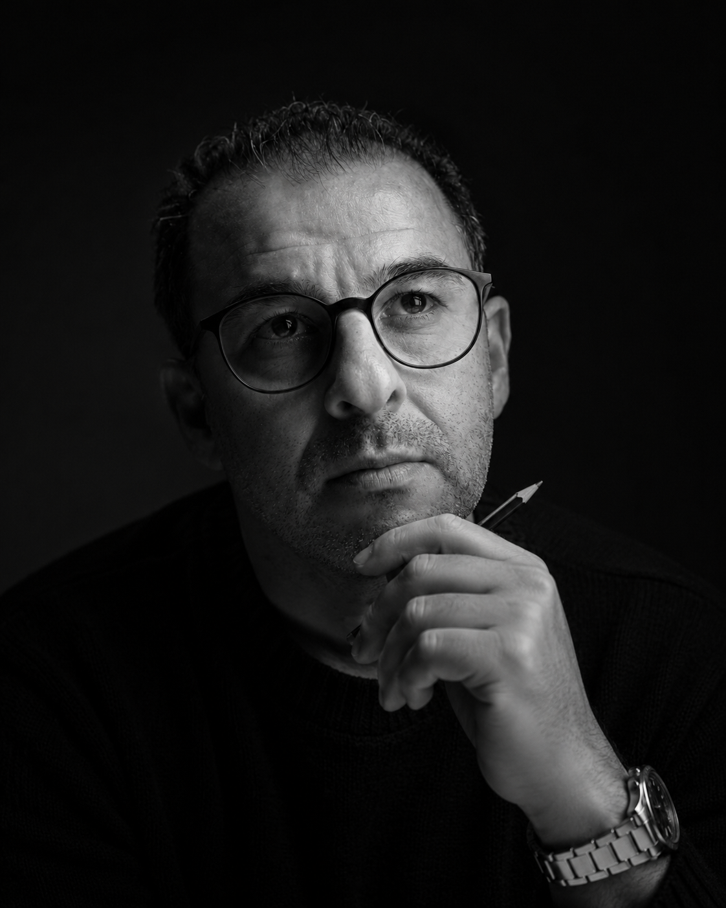

Bien avant de devenir un duo professionnel, nous partagions déjà une même passion : celle de créer et de donner du sens à l'image.
Cette passion a voyagé d'une génération à l'autre : d'un père à son fils, qui a choisi d'en faire son métier en devenant directeur artistique, puis d'un père à sa fille, qui a grandi au cœur des univers créatifs et a développé à son tour une sensibilité pour la communication et le digital.
Aujourd'hui, cette histoire familiale s'écrit autrement : à travers une collaboration où nos regards se complètent.
Directeur Artistique Senior, je façonne des univers visuels premium depuis plus de 25 ans. Après une solide carrière au cœur des plus grandes agences et de projets d'envergure internationale, j'ai choisi de mettre cette exigence directement au service de mes clients en m'installant comme indépendant en 2023.
Mon parcours a été forgé à l'école des grandes agences de communication. Mes années passées chez Ogilvy et DDB ont développé ma capacité à traduire des stratégies complexes en concepts visuels puissants pour des marques internationales (Kia, Danone, Henkel).
J'ai ensuite eu l'honneur de piloter l'image d'événements prestigieux de renommée mondiale. J'ai notamment orchestré la direction artistique et la production print du Festival International du Film de Marrakech, avant de devenir pendant huit ans le DA exclusif du mythique Trophée Hassan II de Golf, collaborant étroitement avec les circuits professionnels les plus exigeants (PGA, European Tour, LET).
Aujourd'hui, j'apporte toute cette expertise, de l'idée créative à la maîtrise technique absolue de la chaîne graphique, avec la réactivité, l'écoute et la proximité d'un partenaire indépendant.
Titulaire d'un double Master (notamment de l'ISTC Lille), j'ai forgé mon expertise sur le terrain en France en pilotant la communication digitale de l'Association FLVS et de CMA France. Native du web, je combine vision stratégique et créativité pour propulser la visibilité des marques. De la conception éditoriale à la création de contenus vidéo et graphiques, je déploie des écosystèmes performants pour fédérer et engager durablement vos communautés.
Nous accompagnons les entreprises qui veulent créer une marque à leur image : forte, claire et habitée par une véritable personnalité.
Car derrière chaque projet, il y a une histoire singulière. Notre rôle est de lui donner sa juste image… puis sa propre voix.